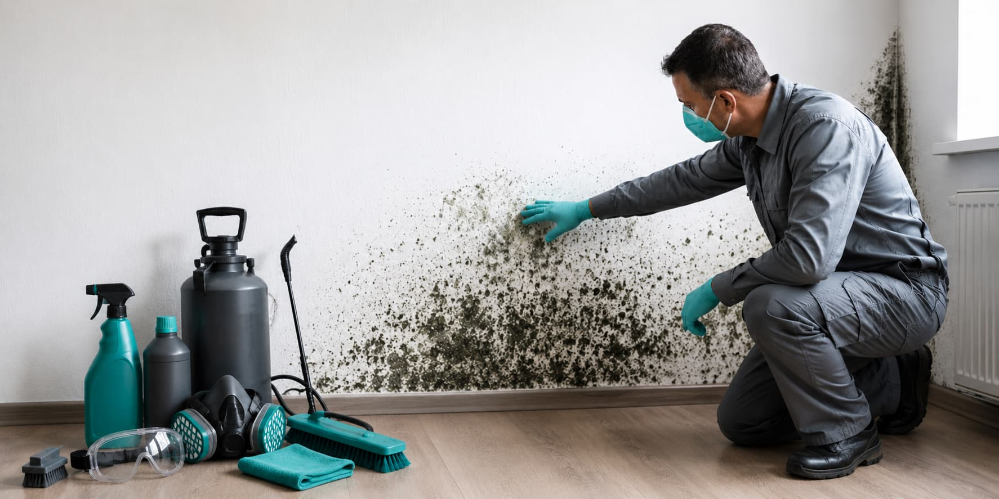

Mold remediation options, compared with clarity.
MoldPros helps homeowners explore mold inspection, remediation, black mold removal, and attic or crawl space cleanup options before moving forward with an independent local provider.
Instead of contacting multiple companies one by one, homeowners can begin with a clearer overview of mold service categories, compare possible provider options, and make more informed decisions before hiring.
Compare
Review mold service types, property concerns, and the kind of provider support that may fit your home before requesting options.
Match
Your request can be routed toward independent mold remediation providers that may serve your area and respond based on your property details.
Request
Ask for estimates, then verify license, insurance, testing process, containment scope, timelines, warranty details, and final agreement directly.
Designed around the way homeowners compare.
From inspection requests to attic and crawl space cleanup concerns, MoldPros keeps the process focused, clear, and centered around independent provider options.

Mold Inspection & Testing
Compare providers for mold inspection, moisture checks, and testing support.

Mold Remediation
Compare providers for containment, cleanup planning, and remediation scope.

Black Mold Removal
Compare providers for suspected black mold concerns and careful cleanup planning.
Attic & Crawl Space Mold Cleanup
Compare providers for attic, basement, crawl space, and hidden moisture concerns.
Mold concerns shaped around real homeowner situations.
A calmer way to compare moisture concerns, visible staining, musty odors, and hidden-area issues before speaking with independent providers.
Unclear mold concern
Compare providers for inspection, moisture checks, testing questions, odors, stains, or possible hidden growth.
Visible mold or water history
Review providers around containment planning, cleanup process, moisture source questions, and written remediation scope.
Attic, basement, or crawl space issue
Explore providers for ventilation, humidity, roof leak history, crawl space moisture, and difficult-access areas.
Small signals that make comparison easier.
MoldPros keeps the first step clean: homeowners choose a category, share a short property note, then compare independent providers without confusing direct-contractor claims.
A calmer way to start a mold remediation request.
Instead of searching through random listings, homeowners can start with clear categories, concise property context, and a simple request flow.
Select the mold service category that fits your concern.
Share basic details about the affected area, moisture history, and timing.
Compare independent provider options before choosing who to contact.

Compare local mold provider options with confidence.
Tell us what kind of mold concern you have and MoldPros will help you explore matching independent providers in your area.
Serving homeowners across the United States.
MoldPros helps you compare independent mold remediation providers in your area with a more streamlined, calm, and transparent experience.
Clear answers before you compare.
How do I compare local mold remediation providers?
Start by choosing a service category, then request provider options based on your concern, location, affected area, moisture history, timing, and property details.
Is MoldPros a mold remediation company?
No. MoldPros is an independent matching platform. Contractors and providers are independent, and homeowners choose who they contact or hire.
Does MoldPros provide medical advice or health guarantees?
No. MoldPros does not provide medical advice, health evaluations, or guaranteed health outcomes. Homeowners should consult qualified professionals for health-related concerns.
What affects mold remediation pricing?
Pricing may depend on the affected area, moisture source, property access, containment needs, testing process, material removal, cleanup scope, location, and the provider selected.